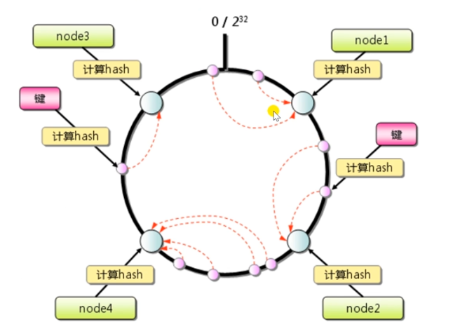
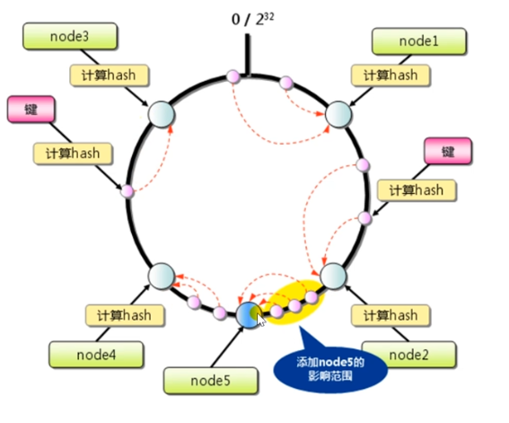
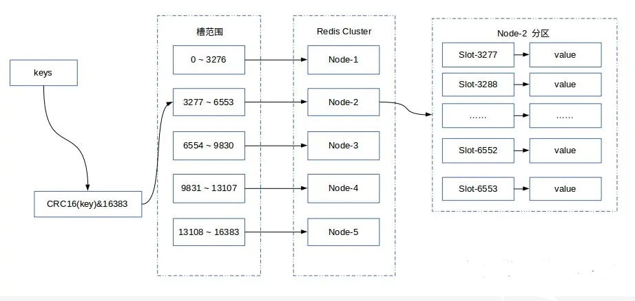

数据分片
数据分片是分布式存储中最重要的问题之一，即当存储被分散到不同的节点时，如何来将数据映射到不同的节点中？
顺序分片（范围分片）
最直观的一种分片方式。假设数据范围是 1100，范围分片就是 133 落到第一个节点，3466 落到第二个节点，67100 落到第三个节点。
顺序分片的有点是能做顺序访问
范围分片的问题：
- 面对顺序写的时候可能存在热点
- 数据可能是倾斜的，比如总是倾向于访问某个范围内的数据
Hash 分片
Hash 分片就是把数据 Hash 一下，然后对节点数量取余得到应该放哪儿。
Hash 分片最大的问题在于当节点需要拓展时，涉及到大量的数据迁移。
一致性 Hash

image-20200628221645619
假设当前有 4 个节点，把这 4 个节点放在一个环上，这个环是从 0 到 hash 函数能够生成的最大值。
每个键被 hash 后，顺时针查找最近的节点，那这个键就应该落在这个节点上。

image-20200628222036769
假设新增一个节点 5，位于节点 2 和节点 4 之间，可以看到此时，这个变更的影响范围就被局限在了很小的一段上。
redis 虚拟槽
redis 集群将整个数据库分成了 16384 个槽（slot）。数据库中的每个键都属于 16384 个槽中的一个，集群中的每个节点可以处理 0 个或者 16384 个槽。

img
槽是 redis 集群管理数据的基本单位，集群伸缩就是槽和数据在节点之间的移动。
redis 集群搭建
cluster meet
首先需要把配置文件里的 cluster-enabled 设置为 yes 以开启集群模式。
启动节点后，不同机器上的节点之间初跑起来的时候都是独立的，需要通过
cluster meet ip port
命令来使服务器之间握手连接。
分配槽
cluster addslots [slot]